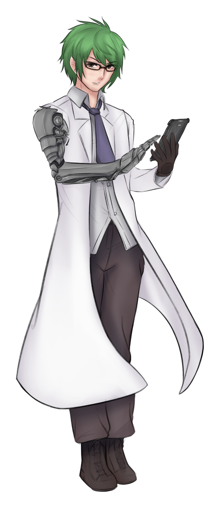

Woden

A grub looking to discover their own new precursor species.
Stats
edge2
heart3
iron3
shadow2
wits4
Meters
Health
3/5
Spirit
5/5
Supply
5/5
Momentum
-6
-5
-4
-3
-2
-1
0
+1
+2
+3
+4
+5
+6
+7
+8
+9
+10
Experience
Experience
Available0Earned0Spent0
Special Tracks
Bonds (0 XP earned)
Discoveries (0 XP earned)
Quests (0 XP earned)
Assets
Augmented
Path
- You are equipped with an advanced prosthetic, implant, or mechanical enhancement. When you make a move directly aided by the augment, envision how it gives you exceptional capabilities and add +1. On a strong hit with a match, your augment exceeds expectations; take +2 momentum. On a miss with a match, the augment is broken; you must Repair and spend 3 repair points to bring it back to working condition.
- You are equipped with a second augment. It functions as above, but the benefits of the two augments do not stack.
- When you must Endure Harm or Face Death, you may instead mark an augment as broken. Repair it as detailed above.
Lore Hunter
Path
- When you Swear an Iron Vow (formidable or greater) to recover valuable knowledge or an extraordinary relic, reroll any dice. When you Reach a Milestone in the pursuit of that quest, take +2 momentum. When you Fulfill Your Vow and score a hit, also mark 2 ticks on your discoveries legacy track.
- When you make a move to conduct extended research or study, reroll any challenge dice. On a match, you piece together an extraordinary or harrowing new theory; envision the nature of this revelation and mark 1 tick on your discoveries legacy track.
- When you recall esoteric knowledge to Secure an Advantage or Gain Ground, add +1. On a hit, envision the obscure but helpful fact, theory, or technique you put to use, and take +1 momentum.
Starship
Command Vehicle
- Your armed, multipurpose starship is suited for interstellar and atmospheric flight. It can comfortably transport several people, has space for cargo, and can carry and launch support vehicles. When you Advance, you may spend experience to equip this vehicle with module assets.
- When you Finish an Expedition (dangerous or greater) in your starship and score a hit, this journey strengthened your ties to your ship and any fellow travelers. You and your allies may mark 1 tick on your bonds legacy track.
- When you Withstand Damage, you may roll +heart. If you do, Endure Stress (-1) on a weak hit or miss.
Sprite
Companion
- Your sprite companion alters its delicate, crystalline form to fly, swim, or scurry, and can covertly navigate even the harshest of environments. When you make a move by sending it to perform trickery (such as creating a distraction, sneaking into a protected location, or stealing an object) add +its health.
- You are attuned to the resonance of the sprite's crystalline structure, and can communicate with it at a distance and perceive through its senses. When you Secure an Advantage by observing a situation from its perspective, or remotely Gather Information, add +its health.
- With a moment's rest, the sprite can mend its form and return automatically to max health.
Asset rules text from Ironsworn: Starforged by Shawn Tomkin, used under CC BY 4.0.